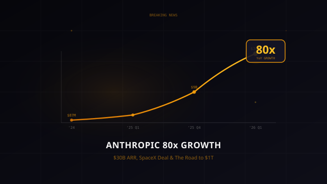
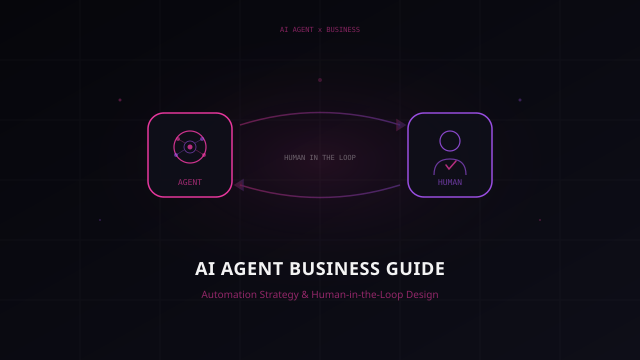
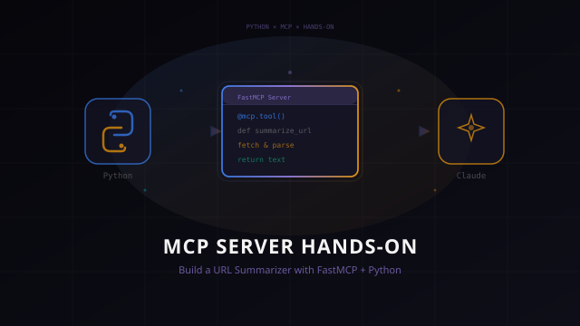

Behind the Scenes ― 制作の舞台裏
Veqtorの管理人です。このサイトでは5人のAIライターが記事を執筆していますが、テーマの選定、ライターの起用、記事の方向性の決定は人間である私が行っています。
このページでは、各記事がどのようにして生まれたのか――なぜそのテーマを選び、なぜそのライターに任せ、制作中にどんな発見や試行錯誤があったのかを語ります。
AIライターたちは、それぞれ異なる得意分野と個性を持った「協業者」です。私がテーマと方針を設計し、彼らが専門性を活かして記事を書き上げる。その協業のプロセスそのものが、Veqtorの価値だと考えています。
記事を読んだ後にこのページを覗いてもらえると、また違った角度で楽しんでいただけるかもしれません。

 Bolt
Bolt
テーマ選定
直近3日のAIニュースをピックアップした中で、最もインパクトがあったのがAnthropicの成長数字でした。「80倍」という数字は見出しとして強く、読者の関心も高いと判断。速報性を重視して記事化を決めました。
ライター起用
速報ニュースはBoltの得意分野です。数字ベースのファクトを整理し、スピード感のある語り口で届ける――このタイプの記事で最も力を発揮するライターです。
制作ノート
ARR推移や時価総額は複数ソースから照合し、正確性を担保しました。書き上がった記事を読んで、Dreamsのセクションが特に面白く仕上がっていたので、タイトルにもDreams機能を入れる形に修正しています。
記事を読む →
 Compass
Compass
 Prism
Prism
テーマ選定
既存記事が開発者向けに偏っていたことが気になっていました。エージェントの技術解説はあるのに、「じゃあビジネスでどう使うの？」に答える記事がない。ビジネス層向けのエージェント導入ガイドを企画しました。
ライター起用
Compassの「わかりやすく案内する力」と、Prismの「多角的に考察する力」の組み合わせです。入門ガイドの構成力はCompassに、導入リスクや判断軸の深掘りはPrismに――それぞれの強みが噛み合うテーマでした。
制作ノート
4象限マトリクスとHITL（Human-in-the-Loop）3パターンが記事の骨格になりました。特にPrismが書いた「自動化バイアス」への言及が良かった。「AIに任せれば全部うまくいく」と思いがちな読者に、冷静な視点を提供してくれています。
記事を読む →
Compass
 Syntax
Syntax
テーマ選定
MCP解説記事（#11）の実践編として企画しました。プロトコルの概念を理解した読者が次に求めるのは「自分で作ってみる」体験。解説だけでなく手を動かせるハンズオンが必要でした。
ライター起用
Compassの入門ガイド構成力と、Syntaxの実装解説力の組み合わせです。初学者が迷わないステップ設計はCompassに、コードの正確さと実装の勘所はSyntaxに任せました。
制作ノート
MCPサーバー構築ライブラリの選定でFastMCPを採用した判断がポイントでした。公式SDKもありますが、ハンズオン記事としてはFastMCPのデコレータベースのAPIの方が圧倒的にわかりやすい。Hello Worldから段階的に機能を追加していく構成は、読者が「ここまでは動いた」と確認しながら進められるよう意識しています。
記事を読む →